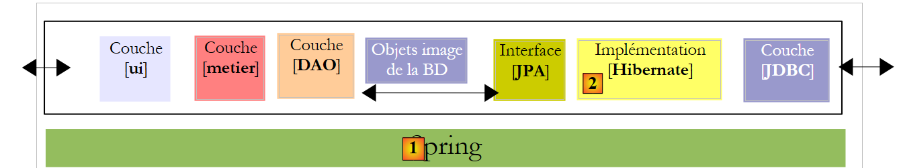
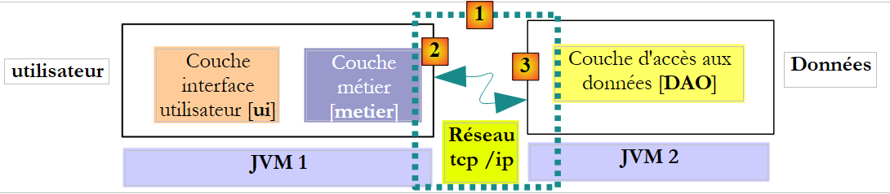
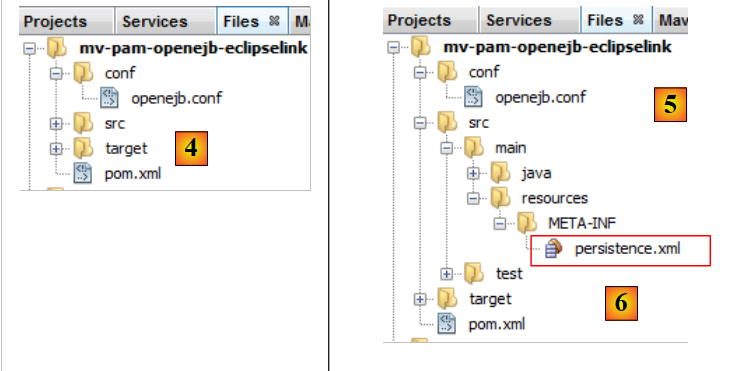

6. Versie 2: Architectuur OpenEJB / JPA
6.1. Inleiding tot de principes van de porting
Hier presenteren we de principes die van toepassing zijn op de porting van een JPA / Spring / Hibernate-toepassing naar een JPA / OpenEJB / EclipseLink-toepassing. We wachten tot paragraaf 6.2 om de Maven-projecten aan te maken.
6.1.1. De twee architecturen
De huidige implementatie met Spring / Hibernate
 |
De te bouwen implementatie met OpenEJB / EclipseLink
 |
6.1.2. De bibliotheken van de projecten
- De lagen [DAO] en [metier] worden niet langer geïnstantieerd door Spring. Dit gebeurt nu door de container OpenEJB.
- De bibliotheken van de Spring-container en de bijbehorende configuratie worden vervangen door de bibliotheken van de OpenEJB-container en de bijbehorende configuratie.
- De bibliotheken van de laag JPA / Hibernate worden vervangen door die van de laag JPA / EclipseLink
6.1.3. Configuratie van de laag JPA / EclipseLink / OpenEJB
- Het bestand [META-INF/persistence.xml], dat de laag JPA configureert, ziet er als volgt uit:
- regel 3: de transacties in een container EJB zijn van het type JTA (Java-transactie API). Met Spring waren ze van het type RESOURCE_LOCAL.
- regel 9: de gebruikte implementatie JPA is EclipseLink
- regels 5-7: de entiteiten die worden beheerd door de laag JPA
- regels 11-13: eigenschappen van de provider EclipseLink
- regel 12: bij elke uitvoering worden de tabellen aangemaakt
De kenmerken JDBC van de gegevensbron JTA die door de container OpenEJB wordt gebruikt, worden gespecificeerd door het volgende configuratiebestand [conf/openejb.conf]:
- regel 3: we gebruiken de id Default JDBC Database wanneer we werken met een container OpenEJB die in de applicatie zelf is ingebed (embedded).
- regel 5: we gebruiken een database MySQL [dbpam_eclipselink]
6.1.4. Implementatie van de [DAO]-laag door middel van EJB
- De klassen die de laag [DAO] implementeren, worden EJB. Laten we de klasse [CotisationDao] als voorbeeld nemen:
De interface [ICotisationDao] in de Spring-versie zag er als volgt uit:
De EJB zal dezezelfde interface in twee verschillende vormen implementeren: een lokale en een externe. De lokale interface kan worden gebruikt door een client die in dezelfde JVM draait, de externe interface door een client die in een andere JVM draait.
De lokale interface:
- regel 6: de interface [ICotisationDaoLocal] erft van de interface [ICotisationDao] om alle methoden ervan over te nemen. Er worden geen nieuwe methoden toegevoegd.
- regel 5: de annotatie @Local maakt er een lokale interface van voor de interface EJB, die deze zal implementeren.
De externe interface:
- regel 6: de interface [ICotisationDaoRemote] erft van de interface [ICotisationDao] om alle methoden ervan over te nemen. Er worden geen nieuwe methoden toegevoegd.
- regel 5: de annotatie @Remote maakt er een remote-interface van voor de EJB die deze zal implementeren.
De laag [DAO] wordt geïmplementeerd door een EJB die beide interfaces implementeert (dit is niet verplicht):
- regel 1: de annotatie @Stateless, waardoor de klasse een EJB wordt
- regel 2: de annotatie @TransactionAttribute, waardoor elke methode van de klasse binnen een transactie wordt uitgevoerd.
- regel 5: de annotatie @PersistenceContext die de EntityManager uit de laag JPA in de klasse [CotisationDao] injecteert. Deze is identiek aan wat we in de Spring-versie hadden.
Wanneer de lokale interface van de laag [DAO] wordt gebruikt, wordt de client van deze interface uitgevoerd in dezelfde JVM.
 |
Hierboven wisselen de lagen [metier] en [DAO] objecten uit via verwijzing. Wanneer een laag het gedeelde object wijzigt, ziet de andere laag deze wijziging.
Wanneer de externe interface van de laag [DAO] wordt gebruikt, draait de client van deze interface doorgaans in een andere JVM.
 |
Hierboven wisselen de lagen [metier] en [DAO] objecten uit op basis van waarde (serialisatie van het uitgewisselde object). Wanneer een laag een gedeeld object wijzigt, ziet de andere laag deze wijziging alleen als het gewijzigde object naar haar wordt teruggestuurd.
6.1.5. Implementatie van de laag [metier] door een EJB
- De klasse die de laag [metier] implementeert, wordt zelf ook een EJB die een lokale en een externe interface implementeert. De oorspronkelijke interface [IMetier] zag er als volgt uit:
We maken een lokale interface en een externe interface op basis van de vorige interface:
De EJB van de laag [metier] implementeert deze twee interfaces:
- regels 1-2: definiëren een EJB waarvan elke methode in een transactie wordt uitgevoerd.
- regel 7: een verwijzing naar de lokale interface van de EJB [CotisationDao].
- regel 6: de annotatie @EJB vraagt de container EJB om een verwijzing naar de lokale interface van de EJB [CotisationDao] te injecteren.
- regels 8-11: we herhalen hetzelfde voor de lokale interfaces van de EJB, [EmployeDao] en [IndemniteDao].
Uiteindelijk, wanneer de EJB en [Metier] worden geïnstantieerd, worden de velden op de regels 7, 9 en 11 geïnitialiseerd met verwijzingen naar de lokale interfaces van de drie EJB-instanties van de laag [DAO]. We gaan er hier dus van uit dat de lagen [metier] en [DAO] in dezelfde JVM zullen worden uitgevoerd.
 |
6.1.6. De clients van de EJB
 |
In het bovenstaande schema moet de laag [ui], om te communiceren met de laag [metier], een verwijzing verkrijgen naar de externe interface van de laag EJB van de laag [metier].
 |
In het bovenstaande schema moet de laag [ui], om te communiceren met de laag [metier], een verwijzing verkrijgen via de lokale interface van de laag EJB van de laag [metier]. De methode om deze verwijzingen te verkrijgen verschilt per container. Voor de container OpenEJB kan als volgt te werk worden gegaan:
Referentie op de lokale interface:
- regels 2-5: de container OpenEJB wordt geïnitialiseerd.
- regel 5: er is een JNDI-context (Java Naming and Directory Interface) waarmee verwijzingen naar de EJB kunnen worden verkregen. Elke EJB wordt aangeduid met een naam JNDI:
- (vervolg)
- voor de lokale interface voegen we ‘Local’ toe aan de naam van de EJB (regels 7-9)
- voor de externe interface wordt ‘Remote’ toegevoegd aan de naam van de EJB
Met Java EE 5 veranderen deze regels afhankelijk van de container EJB. Dit is een probleem. Java EE 6 heeft een notatie geïntroduceerd die op alle applicatieservers draagbaar is.
De bovenstaande code haalt verwijzingen op naar de lokale interfaces van de EJB via hun namen JNDI. We hebben eerder gezegd dat deze ook via de annotatie @EJB kunnen worden verkregen. Men zou dus het volgende kunnen willen schrijven:
De annotatie @EJB wordt alleen gehonoreerd als deze behoort tot een klasse die wordt geladen door de container EJB. Dit is bijvoorbeeld het geval voor de klasse [Metier]. De bovenstaande code behoort echter tot een consoleklasse die niet door de container EJB wordt geladen. We zijn dus genoodzaakt om de namen JNDI of EJB te gebruiken.
Hieronder staat de code om een verwijzing te krijgen naar de externe interface van EJB en [Metier]:
6.2. Praktische opdracht
We zijn van plan de NetBeans Spring/Hibernate-applicatie te porten naar een OpenEJB/EclipseLink-architectuur.
De huidige implementatie met Spring / Hibernate
 |
De te bouwen implementatie met OpenEJB / EclipseLink
 |
6.2.1. Het opzetten van de database [dbpam_eclipselink]
Als de database nog niet bestaat, maak dan de database MySQL [dbpam_eclipselink] aan. Als deze al bestaat, verwijder dan alle tabellen. Maak een NetBeans-verbinding met deze database aan zoals beschreven in paragraaf 6.2.1.
6.2.2. Eerste configuratie van het NetBeans-project
- Laad het Maven-project [mv-pam-spring-hibernate]
- Maak een nieuw Java-Maven-project aan met de naam [mv-pam-openejb-eclipselink] en [1]
 |
- Maak in het tabblad [Files] [2] een map [conf] [3] aan onder de hoofdmap van het project
- plaats in deze map het volgende bestand [openejb.conf] [4]:
 |
- Maak de map [src / main/ resources/ META-INF] [5] aan
- plaats daarin het volgende bestand: [persistence.xml] [6]:
<?xml version="1.0" encoding="UTF-8"?>
<persistence version="1.0" xmlns="http://java.sun.com/xml/ns/persistence" xmlns:xsi="http://www.w3.org/2001/XMLSchema-instance" xsi:schemaLocation="http://java.sun.com/xml/ns/persistence http://java.sun.com/xml/ns/persistence/persistence_1_0.xsd">
<persistence-unit name="dbpam_eclipselinkPU" transaction-type="JTA">
<!-- de provider JPA is EclipseLink -->
<provider>org.eclipse.persistence.jpa.PersistenceProvider</provider>
<!-- Jpa-entiteiten -->
<class>jpa.Cotisation</class>
<class>jpa.Employe</class>
<class>jpa.Indemnite</class>
<!-- eigenschappen van provider EclipseLink -->
<properties>
<property name="eclipselink.logging.level" value="FINE"/>
<property name="eclipselink.ddl-generation" value="drop-and-create-tables"/>
</properties>
</persistence-unit>
</persistence>
- regel 12: er worden gedetailleerde logbestanden aangevraagd bij EclipseLink,
- regel 13: de tabellen worden aangemaakt bij het instantiëren van de laag JPA,
- Voeg de bibliotheken OpenEJB, EclipseLink en het stuurprogramma JDBC van MySQL toe aan het bestand [pom.xml] van het project:
<project xmlns="http://maven.apache.org/POM/4.0.0" xmlns:xsi="http://www.w3.org/2001/XMLSchema-instance"
xsi:schemaLocation="http://maven.apache.org/POM/4.0.0 http://maven.apache.org/xsd/maven-4.0.0.xsd">
<modelVersion>4.0.0</modelVersion>
<groupId>istia.st</groupId>
<artifactId>mv-pam-openejb-eclipselink</artifactId>
<version>1.0-SNAPSHOT</version>
<packaging>jar</packaging>
<name>mv-pam-openejb-eclipselink</name>
<url>http://maven.apache.org</url>
<properties>
<project.build.sourceEncoding>UTF-8</project.build.sourceEncoding>
</properties>
<dependencies>
<dependency>
<groupId>org.apache.openejb</groupId>
<artifactId>openejb-core</artifactId>
<version>4.0.0</version>
</dependency>
<dependency>
<groupId>junit</groupId>
<artifactId>junit</artifactId>
<version>4.10</version>
<scope>test</scope>
<type>jar</type>
</dependency>
<dependency>
<groupId>org.eclipse.persistence</groupId>
<artifactId>eclipselink</artifactId>
<version>2.3.0</version>
</dependency>
<dependency>
<groupId>org.eclipse.persistence</groupId>
<artifactId>javax.persistence</artifactId>
<version>2.0.3</version>
</dependency>
<dependency>
<groupId>mysql</groupId>
<artifactId>mysql-connector-java</artifactId>
<version>5.1.6</version>
</dependency>
<dependency>
<groupId>org.swinglabs</groupId>
<artifactId>swing-layout</artifactId>
<version>1.0.3</version>
</dependency>
</dependencies>
<repositories>
<repository>
<url>http://download.eclipse.org/rt/eclipselink/maven.repo/</url>
<id>eclipselink</id>
<layout>default</layout>
<name>Repository for library Library[eclipselink]</name>
</repository>
</repositories>
</project>
- regels 18-22: de afhankelijkheid OpenEJB,
- regels 30-39: de afhankelijkheden EclipseLink,
- regels 41-44: de afhankelijkheid van de driver JDBC van MySQL
6.2.3. Porting van de laag [DAO]
We gaan de [DAO]-laag porten door pakketten van het project [mv-pam-spring-hibernate] naar het project [mv-pam-openejb-eclipselink] te kopiëren.
- de pakketten [dao, exception, jpa] kopiëren
 |
De hierboven gemelde fouten zijn te wijten aan het feit dat de gekopieerde laag [DAO] gebruikmaakt van Spring en dat de Spring-bibliotheken niet langer deel uitmaken van het project.
6.2.3.1. De EJB [CotisationDao]
We maken de lokale en externe interfaces van de toekomstige EJB [CotisationDao]:
De lokale interface ICotisationDaoLocal:
Om de juiste pakketten te krijgen, voer import uit.
De externe interface ICotisationDaoRemote:
Vervolgens passen we de klasse [CotisationDao] aan om er een EJB van te maken:
De import die deze klasse op het Spring-framework uitvoerde, verdwijnt. Maak een [Clean and Build] van het project:
 |
In [1] zijn er geen fouten meer in de klasse [CotisationDao].
6.2.3.2. De EJB, [EmployeDao] en [IndemniteDao]
We herhalen dezelfde procedure voor de andere elementen van de laag [DAO]:
- de interfaces IEmployeDaoLocal en IEmployeDaoRemote, afgeleid van IEmployeDao
- EJB en EmployeDao, die deze twee interfaces implementeren
- interfaces IIndemniteDaoLocal, IIndemniteDaoRemote, afgeleid van IIndemniteDao
- EJB en IndemniteDao die deze twee interfaces implementeren
Nu dit is gebeurd, zijn er geen fouten meer in het project [2].
6.2.3.3. De klasse [PamException]
De klasse [PamException] blijft zoals hij was, op één detail na:
Regel 5 is toegevoegd. Om de juiste import te krijgen, moet je [Fix imports] gebruiken.
Om de aantekening bij regel 5 te begrijpen, moet je bedenken dat elke methode van de EJB in onze laag [DAO]:
- wordt uitgevoerd in een transactie die wordt gestart en beëindigd door de container EJB
- een uitzondering van het type [PamException] genereert zodra er iets misgaat
 |
Wanneer de laag [metier] een methode M van de laag [DAO] aanroept, wordt deze aanroep onderschept door de container EJB. Het is alsof er een tussenliggende klasse zit tussen de laag [metier] en de laag [DAO], hier [Proxy EJB] genoemd, die alle aanroepen naar de laag [DAO] onderschept. Wanneer de aanroep van methode M van de laag [DAO] wordt onderschept, start de proxy EJB een transactie en geeft vervolgens het woord door aan methode M van de laag [DAO], die vervolgens binnen deze transactie wordt uitgevoerd. De methode M wordt met of zonder uitzondering beëindigd.
- Als methode M zonder uitzondering wordt beëindigd, keert de uitvoering terug naar de proxy EJB, die de transactie afsluit door deze te valideren met een commit. De uitvoeringsstroom wordt vervolgens teruggegeven aan de aanroepende methode van de laag [metier]
- Als de methode M met een uitzondering eindigt, keert de uitvoering terug naar de proxy EJB, die de transactie afsluit door deze ongeldig te maken met een rollback. Bovendien kapselt deze proxy de uitzondering in een type EJBException. De uitvoeringsstroom wordt vervolgens teruggegeven aan de aanroepende methode van de laag [metier], die dus een EJBException ontvangt. De annotatie op regel 5 hierboven voorkomt deze inkapseling. De laag [metier] ontvangt dus een PamException. Bovendien geeft het attribuut rollback=true aan de proxy EJB aan dat hij, wanneer hij een PamException ontvangt, de transactie moet ongeldig maken.
6.2.3.4. Test van de laag [DAO]
Onze laag [DAO], geïmplementeerd door EJB, kan worden getest. We beginnen met het kopiëren van het pakket [dao] van [Test Packages] uit het project [mv-pam-springhibernate] naar het project [1] dat momenteel in ontwikkeling is:
 |
We behouden alleen de test [JUnitInitDB], die de database initialiseert met enkele gegevens uit [2]. We hernoemen de klasse [ JUnitInitDbLocal] naar [3]. De klasse [JUnitInitDBLocal] zal gebruikmaken van de lokale interface van EJB uit de laag [DAO].
We wijzigen eerst de klasse [JUnitInitDBLocal] als volgt:
- regels 3-5: verwijzingen naar de lokale interfaces van EJB van de laag [DAO]
- regel 7: @BeforeClass markeert de methode die wordt uitgevoerd bij het starten van de test JUnit
- regels 10-13: initialisatie van de container OpenEJB. Deze initialisatie is eigen aan de container en verschilt per container EJB.
- regel 13: er is een JNDI-context (Java Naming and Directory Interface) waarmee via namen toegang kan worden verkregen tot de EJB. Met OpenEJB wordt de lokale interface van een EJB E aangeduid met ELocal en de externe interface met ERemote.
- regels 15-17: er wordt aan de context JNDI gevraagd om een verwijzing naar de lokale interfaces van de EJB en [EmployeDao, CotisationDao, IndemniteDao].
 |
Het project wordt gebouwd (Build), de server MySQL wordt indien nodig gestart en de test JUnitInitDBLocal wordt uitgevoerd. Ter herinnering: het bestand [persistence.xml] is zo geconfigureerd dat de tabellen bij elke uitvoering opnieuw worden aangemaakt. Voordat de test wordt uitgevoerd, is het raadzaam om eventuele tabellen uit de database MySQL en [dbpam_eclipselink] te verwijderen.
 |
- in [1], op het tabblad [Services], verwijdert u de tabellen van de NetBeans-verbinding die in paragraaf 6.2.1 is ingesteld.
- in [2] bevat de database [dbpam_eclipselink] geen tabellen meer
- in [3] wordt het project gebouwd
- in [4] wordt de test JUnitInitDBLocal uitgevoerd
 |
- in [5] is de test geslaagd
- in [6] wordt de NetBeans-verbinding vernieuwd
- in [7], zien we de 4 tabellen die zijn aangemaakt door de laag JPA. Het doel van de test was om deze te vullen. We bekijken de inhoud van een van deze tabellen
 |
- in [8], de inhoud van de tabel [EMPLOYES]
De container OpenEJB heeft logberichten weergegeven in de console:
- regels 2-3: de twee namen JNDI van de EJB en [CotisationDaoLocal],
- regels 4-5: de twee namen JNDI van de EJB en [CotisationDaoRemote],
- regels 7-8: de twee namen JNDI van de EJB [EmployeDaoLocal],
- regels 9-10: de twee namen JNDI van de EJB [EmployeDaoRemote],
- regels 12-13: de twee namen JNDI van de EJB en [IndemniteDaoLocal],
- regels 14-15: de twee namen JNDI van de EJB en [EmployeDaoRemote].
We voeren dezelfde test opnieuw uit, ditmaal met behulp van de externe interface van de EJB.
 |
In [1] is de klasse [JUnitInitDBLocal] gekopieerd (kopiëren/plakken) naar [JUnitInitDBRemote]. In deze klasse vervangen we de lokale interfaces door de externe interfaces:
Zodra dit is gebeurd, kan de nieuwe testklasse worden uitgevoerd. Verwijder eerst, met de NetBeans-verbinding [dbpam_eclipselink], de tabellen uit de database [dbpam_eclipselink].
 |
Controleer met de NetBeans-verbinding [dbpam_eclipselink] of de database is gevuld.
6.2.4. Overzetting van de laag [metier]
We gaan de migratie van de laag [metier] uitvoeren door pakketten van het project [mv-pam-spring-hibernate] naar het project [mv-pam-openejb-eclipselink] te kopiëren.
 |
De hierboven gemelde fouten [1] zijn te wijten aan het feit dat de gekopieerde laag [metier] gebruikmaakt van Spring en dat de Spring-bibliotheken niet langer deel uitmaken van het project.
6.2.4.1. De EJB [Metier]
We volgen dezelfde werkwijze als beschreven voor de EJB [CotisationDao]. Eerst maken we in [2] de lokale en externe interfaces van de toekomstige EJB [Metier] aan. Beide zijn afgeleid van de oorspronkelijke interface [IMetier].
Nu dit is gebeurd, passen we in [3] de klasse [Metier] aan, zodat deze een EJB wordt:
- regel 1: de annotatie @Stateless maakt van de klasse een EJB
- regel 2: elke methode van de klasse wordt uitgevoerd binnen een transactie
- regel 3: de EJB [Metier] implementeert de twee interfaces (lokaal en op afstand) die we zojuist hebben gedefinieerd
- regel 7: de EJB [Metier] zal de EJB [CotisationDao] gebruiken via de lokale interface daarvan. Dit betekent dat de lagen [metier] en [DAO] in dezelfde JVM moeten worden uitgevoerd.
- regel 6: de annotatie @EJB zorgt ervoor dat de container EJB zelf de verwijzing injecteert in de lokale interface van EJB [CotisationDao]. De andere manier die we zijn tegengekomen, is het gebruik van een JNDI-context.
- regels 8-11: hetzelfde mechanisme wordt gebruikt voor de twee andere EJB’en van de laag [DAO].
6.2.4.2. Testen van de laag [metier]
Onze laag [metier], geïmplementeerd door een EJB, kan worden getest. We beginnen met het kopiëren van het pakket [metier] van [Test Packages] uit het project [mv-pam-spring-hibernate] naar het project [1] dat momenteel in ontwikkeling is:
 |
- naar [1], het resultaat van het kopiëren
- naar [2], de eerste test wordt verwijderd
- in [3] wordt de resterende test hernoemd naar [JUnitMetierLocal]
De klasse [JUnitMetierLocal] ziet er als volgt uit:
- regel 4: een verwijzing naar de lokale interface van EJB [Metier]
- regels 8-12: configuratie van de container OpenEJB, identiek aan die in de test van de laag [DAO]
- regels 15-19: er wordt gevraagd om de context JNDI uit regel 12, referenties op te geven voor de 3 EJB van de laag [DAO] en voor de EJB van de laag [metier]. De EJB van de laag [DAO] worden gebruikt om de database te initialiseren, de EJB van de laag [metier] om tests uit te voeren voor loonberekeningen.
Het uitvoeren van de test [JUnitMetierLocal] levert het volgende resultaat op: [1]:
 |
In [2] dupliceren we [JUnitMetierLocal] naar [JUnitMetierRemote] om deze keer de externe interface van EJB en [Metier] te testen. De code van [JUnitMetierRemote] wordt aangepast om deze externe interface te gebruiken. De rest blijft ongewijzigd.
- regels 4 en 19: we gebruiken de externe interface van de EJB [Metier].
- regels 15-17: er wordt gebruikgemaakt van de externe interfaces van de laag [DAO]
- regels 34-35: omdat bij externe interfaces de objecten die tussen de client en de server worden uitgewisseld, per waarde worden doorgegeven, moet het resultaat van de methode create(Indemnite i) worden opgehaald. Dit was niet nodig bij lokale interfaces, waar objecten per verwijzing worden doorgegeven.
Zodra dit is gebeurd, kan het project worden gebouwd en de test [JUnitMetierRemote] worden uitgevoerd:
 |
6.2.5. Porting van de laag [console]
We gaan de [console]-laag porten door pakketten uit het project [mv-pam-spring-hibernate] naar het project [mv-pam-openejb-eclipselink] te kopiëren.
 |
De hierboven gemelde fouten in [1] zijn te wijten aan het feit dat de gekopieerde laag [metier] gebruikmaakt van Spring en dat de Spring-bibliotheken niet langer deel uitmaken van het project. In [2] wordt de klasse [Main] hernoemd naar [MainLocal]. Deze zal gebruikmaken van de lokale interface van EJB [Metier].
De code van de klasse [MainLocal] verandert als volgt:
De wijzigingen bevinden zich in de regels 13-25. Het betreft de manier waarop een verwijzing naar de laag [metier] wordt gemaakt (regels 17-22). We gaan niet in op de nieuwe code, aangezien deze al in eerdere voorbeelden is behandeld. Zodra deze wijzigingen zijn doorgevoerd, vertoont het project geen fouten meer (zie [3]).
We configureren het project zodat het met de argumenten [1] wordt uitgevoerd:
 |
Om de console-applicatie normaal te laten draaien, moet er data in de database staan. Hiervoor moet het bestand [META-INF/persistence.xml] worden aangepast:
<?xml version="1.0" encoding="UTF-8"?>
<persistence version="1.0" xmlns="http://java.sun.com/xml/ns/persistence" xmlns:xsi="http://www.w3.org/2001/XMLSchema-instance" xsi:schemaLocation="http://java.sun.com/xml/ns/persistence http://java.sun.com/xml/ns/persistence/persistence_1_0.xsd">
<persistence-unit name="dbpam_eclipselinkPU" transaction-type="JTA">
<!-- de leverancier JPA is EclipseLink -->
<provider>org.eclipse.persistence.jpa.PersistenceProvider</provider>
<!-- Jpa-entiteiten -->
<class>jpa.Cotisation</class>
<class>jpa.Employe</class>
<class>jpa.Indemnite</class>
<!-- eigenschappen van provider EclipseLink -->
<properties>
<property name="eclipselink.logging.level" value="FINE"/>
<!--
<property name="eclipselink.ddl-generation" value="drop-and-create-tables"/>
-->
</properties>
</persistence-unit>
</persistence>
Regel 14, die ervoor zorgde dat de tabellen in de database bij elke uitvoering opnieuw werden aangemaakt, wordt uitgecommentarieerd. Het project moet opnieuw worden opgebouwd (Clean and Build) om deze wijziging door te voeren. Zodra dit is gebeurd, kan het programma worden uitgevoerd. Als alles goed gaat, verschijnt er een consoleweergave die er ongeveer zo uitziet:
We hebben hier de lokale interface van de laag [metier] gebruikt. We gebruiken nu de externe interface ervan in een tweede consoleklasse:
|
In [1] is de klasse [MainLocal] gedupliceerd naar [MainRemote]. De code van [MainRemote] is aangepast om de externe interface van de laag [metier] te gebruiken:
De wijzigingen zijn aangebracht in de regels 2 en 8. Het project is geconfigureerd als [2] om de klasse [MainRemote] uit te voeren. De uitvoering ervan levert dezelfde resultaten op als voorheen.
6.3. Conclusion
We hebben laten zien hoe een Spring/Hibernate-architectuur kan worden omgezet naar een OpenEJB/EclipseLink-architectuur.
De Spring/Hibernate-architectuur
 |
De OpenEJB / EclipseLink-architectuur
 |
De porting kon zonder al te veel problemen worden uitgevoerd omdat de oorspronkelijke applicatie in lagen was gestructureerd. Dit is een belangrijk punt om te begrijpen.